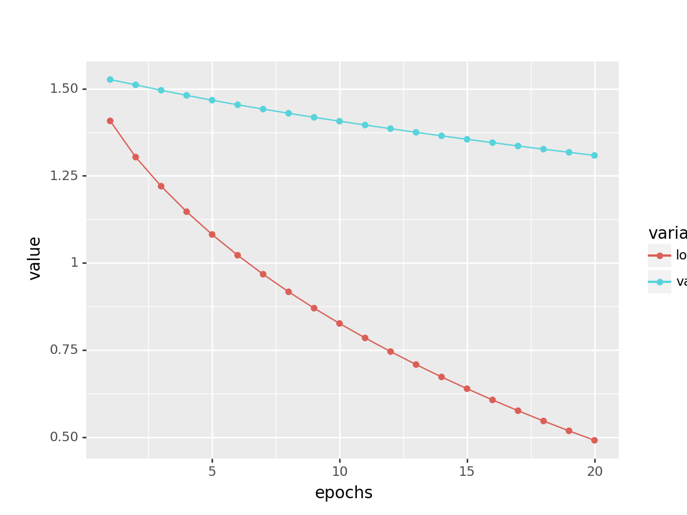

Xiao Song
As a beginner, it’s necessary to write some simple guides using simple data.
import numpy as np
import pandas as pd
X_train = pd.read_csv('E:/some_code/py_basic/house_price/data/train1.csv') # prepare data
X_test = pd.read_csv('E:/some_code/py_basic/house_price/data/test1.csv')
Y_train = np.array(X_train['SalePrice'])
Y_train = np.log1p(Y_train)
X_train.drop(['SalePrice'],axis = 1, inplace = True)Y_train
#> array([12.24769912, 12.10901644, 12.31717117, ..., 12.25486757,
#> 12.49313327, 11.86446927])X_train.shape
#> (1436, 109)X_test.shape
#> (1459, 109)Feature Standardization
Standardize features by removing the mean and scaling to unit variance: \[z = {{x - u} \over s}\]
\(z\) is standardize feature of \(x\), u is the mean of \(x\), and \(s\) is the standard deviation of \(x\).
#from sklearn.preprocessing import RobustScaler
from sklearn.preprocessing import StandardScaler
def standardize(df):
'''standardize features'''
transformer = StandardScaler().fit(df)
newX = transformer.transform(df)
X = pd.DataFrame(newX,columns = df.columns)
return X
X_train = standardize(X_train) # X train
X_test = standardize(X_test) X_train
#> MSSubClass MSZoningRM ... SaleTypeWD SaleConditionOth
#> 0 0.074674 -0.517138 ... 0.389312 -0.465778
#> 1 -0.874282 -0.517138 ... 0.389312 -0.465778
#> 2 0.074674 -0.517138 ... 0.389312 -0.465778
#> 3 0.311913 -0.517138 ... 0.389312 2.146946
#> 4 0.074674 -0.517138 ... 0.389312 -0.465778
#> ... ... ... ... ... ...
#> 1431 -0.874282 1.933720 ... 0.389312 -0.465778
#> 1432 0.074674 -0.517138 ... 0.389312 -0.465778
#> 1433 -0.874282 -0.517138 ... 0.389312 -0.465778
#> 1434 0.311913 -0.517138 ... 0.389312 -0.465778
#> 1435 -0.874282 -0.517138 ... 0.389312 -0.465778
#>
#> [1436 rows x 109 columns]X_train.describe()
#> MSSubClass MSZoningRM ... SaleTypeWD SaleConditionOth
#> count 1.436000e+03 1.436000e+03 ... 1.436000e+03 1.436000e+03
#> mean -5.721205e-17 3.101821e-16 ... -3.223203e-16 -1.622039e-16
#> std 1.000348e+00 1.000348e+00 ... 1.000348e+00 1.000348e+00
#> min -8.742817e-01 -5.171379e-01 ... -2.568635e+00 -4.657780e-01
#> 25% -8.742817e-01 -5.171379e-01 ... 3.893119e-01 -4.657780e-01
#> 50% -1.625649e-01 -5.171379e-01 ... 3.893119e-01 -4.657780e-01
#> 75% 3.119131e-01 -5.171379e-01 ... 3.893119e-01 -4.657780e-01
#> max 3.158781e+00 1.933720e+00 ... 3.893119e-01 2.146946e+00
#>
#> [8 rows x 109 columns]X_train.shape[1]
#> 109Neural Network Building
from keras import models
#> Using TensorFlow backend.
#> C:\ProgramData\Anaconda3\lib\site-packages\tensorflow\python\framework\dtypes.py:516: FutureWarning: Passing (type, 1) or '1type' as a synonym of type is deprecated; in a future version of numpy, it will be understood as (type, (1,)) / '(1,)type'.
#> _np_qint8 = np.dtype([("qint8", np.int8, 1)])
#> C:\ProgramData\Anaconda3\lib\site-packages\tensorflow\python\framework\dtypes.py:517: FutureWarning: Passing (type, 1) or '1type' as a synonym of type is deprecated; in a future version of numpy, it will be understood as (type, (1,)) / '(1,)type'.
#> _np_quint8 = np.dtype([("quint8", np.uint8, 1)])
#> C:\ProgramData\Anaconda3\lib\site-packages\tensorflow\python\framework\dtypes.py:518: FutureWarning: Passing (type, 1) or '1type' as a synonym of type is deprecated; in a future version of numpy, it will be understood as (type, (1,)) / '(1,)type'.
#> _np_qint16 = np.dtype([("qint16", np.int16, 1)])
#> C:\ProgramData\Anaconda3\lib\site-packages\tensorflow\python\framework\dtypes.py:519: FutureWarning: Passing (type, 1) or '1type' as a synonym of type is deprecated; in a future version of numpy, it will be understood as (type, (1,)) / '(1,)type'.
#> _np_quint16 = np.dtype([("quint16", np.uint16, 1)])
#> C:\ProgramData\Anaconda3\lib\site-packages\tensorflow\python\framework\dtypes.py:520: FutureWarning: Passing (type, 1) or '1type' as a synonym of type is deprecated; in a future version of numpy, it will be understood as (type, (1,)) / '(1,)type'.
#> _np_qint32 = np.dtype([("qint32", np.int32, 1)])
#> C:\ProgramData\Anaconda3\lib\site-packages\tensorflow\python\framework\dtypes.py:525: FutureWarning: Passing (type, 1) or '1type' as a synonym of type is deprecated; in a future version of numpy, it will be understood as (type, (1,)) / '(1,)type'.
#> np_resource = np.dtype([("resource", np.ubyte, 1)])
#> C:\ProgramData\Anaconda3\lib\site-packages\tensorboard\compat\tensorflow_stub\dtypes.py:541: FutureWarning: Passing (type, 1) or '1type' as a synonym of type is deprecated; in a future version of numpy, it will be understood as (type, (1,)) / '(1,)type'.
#> _np_qint8 = np.dtype([("qint8", np.int8, 1)])
#> C:\ProgramData\Anaconda3\lib\site-packages\tensorboard\compat\tensorflow_stub\dtypes.py:542: FutureWarning: Passing (type, 1) or '1type' as a synonym of type is deprecated; in a future version of numpy, it will be understood as (type, (1,)) / '(1,)type'.
#> _np_quint8 = np.dtype([("quint8", np.uint8, 1)])
#> C:\ProgramData\Anaconda3\lib\site-packages\tensorboard\compat\tensorflow_stub\dtypes.py:543: FutureWarning: Passing (type, 1) or '1type' as a synonym of type is deprecated; in a future version of numpy, it will be understood as (type, (1,)) / '(1,)type'.
#> _np_qint16 = np.dtype([("qint16", np.int16, 1)])
#> C:\ProgramData\Anaconda3\lib\site-packages\tensorboard\compat\tensorflow_stub\dtypes.py:544: FutureWarning: Passing (type, 1) or '1type' as a synonym of type is deprecated; in a future version of numpy, it will be understood as (type, (1,)) / '(1,)type'.
#> _np_quint16 = np.dtype([("quint16", np.uint16, 1)])
#> C:\ProgramData\Anaconda3\lib\site-packages\tensorboard\compat\tensorflow_stub\dtypes.py:545: FutureWarning: Passing (type, 1) or '1type' as a synonym of type is deprecated; in a future version of numpy, it will be understood as (type, (1,)) / '(1,)type'.
#> _np_qint32 = np.dtype([("qint32", np.int32, 1)])
#> C:\ProgramData\Anaconda3\lib\site-packages\tensorboard\compat\tensorflow_stub\dtypes.py:550: FutureWarning: Passing (type, 1) or '1type' as a synonym of type is deprecated; in a future version of numpy, it will be understood as (type, (1,)) / '(1,)type'.
#> np_resource = np.dtype([("resource", np.ubyte, 1)])
from keras import layers
model = models.Sequential()
model.add(layers.Dense(64, activation='relu',input_shape=(X_train.shape[1],)))
model.add(layers.Dense(64, activation='relu'))
model.add(layers.Dense(1))
model.compile(optimizer='rmsprop', loss='mse', metrics=['mae'])
model.summary()
#> Model: "sequential_1"
#> _________________________________________________________________
#> Layer (type) Output Shape Param #
#> =================================================================
#> dense_1 (Dense) (None, 64) 7040
#> _________________________________________________________________
#> dense_2 (Dense) (None, 64) 4160
#> _________________________________________________________________
#> dense_3 (Dense) (None, 1) 65
#> =================================================================
#> Total params: 11,265
#> Trainable params: 11,265
#> Non-trainable params: 0
#> _________________________________________________________________#?models.Sequential.fitmodel.fit(X_train,Y_train,
epochs = 20, # Number of epochs to train the model
batch_size = 512) # Number of samples per gradient update.
#> Epoch 1/20
#>
#> 512/1436 [=========>....................] - ETA: 0s - loss: 140.8267 - mae: 11.8557
#> 1436/1436 [==============================] - 0s 117us/step - loss: 129.9364 - mae: 11.3778
#> Epoch 2/20
#>
#> 512/1436 [=========>....................] - ETA: 0s - loss: 110.2607 - mae: 10.4750
#> 1436/1436 [==============================] - 0s 6us/step - loss: 104.7116 - mae: 10.2016
#> Epoch 3/20
#>
#> 512/1436 [=========>....................] - ETA: 0s - loss: 92.1465 - mae: 9.5612
#> 1436/1436 [==============================] - 0s 6us/step - loss: 86.7293 - mae: 9.2574
#> Epoch 4/20
#>
#> 512/1436 [=========>....................] - ETA: 0s - loss: 76.0077 - mae: 8.6382
#> 1436/1436 [==============================] - 0s 6us/step - loss: 71.0038 - mae: 8.3401
#> Epoch 5/20
#>
#> 512/1436 [=========>....................] - ETA: 0s - loss: 61.2461 - mae: 7.7208
#> 1436/1436 [==============================] - 0s 6us/step - loss: 56.7937 - mae: 7.4047
#> Epoch 6/20
#>
#> 512/1436 [=========>....................] - ETA: 0s - loss: 47.9284 - mae: 6.7730
#> 1436/1436 [==============================] - 0s 6us/step - loss: 44.1101 - mae: 6.4494
#> Epoch 7/20
#>
#> 512/1436 [=========>....................] - ETA: 0s - loss: 36.3466 - mae: 5.7926
#> 1436/1436 [==============================] - 0s 6us/step - loss: 33.1786 - mae: 5.4922
#> Epoch 8/20
#>
#> 512/1436 [=========>....................] - ETA: 0s - loss: 26.6782 - mae: 4.8259
#> 1436/1436 [==============================] - 0s 7us/step - loss: 24.1637 - mae: 4.5638
#> Epoch 9/20
#>
#> 512/1436 [=========>....................] - ETA: 0s - loss: 18.7983 - mae: 3.9653
#> 1436/1436 [==============================] - 0s 15us/step - loss: 17.1082 - mae: 3.7223
#> Epoch 10/20
#>
#> 512/1436 [=========>....................] - ETA: 0s - loss: 13.0147 - mae: 3.1449
#> 1436/1436 [==============================] - 0s 10us/step - loss: 11.9347 - mae: 3.0062
#> Epoch 11/20
#>
#> 512/1436 [=========>....................] - ETA: 0s - loss: 9.0378 - mae: 2.5687
#> 1436/1436 [==============================] - 0s 7us/step - loss: 8.4068 - mae: 2.4534
#> Epoch 12/20
#>
#> 512/1436 [=========>....................] - ETA: 0s - loss: 6.7916 - mae: 2.1759
#> 1436/1436 [==============================] - 0s 6us/step - loss: 6.1296 - mae: 2.0493
#> Epoch 13/20
#>
#> 512/1436 [=========>....................] - ETA: 0s - loss: 4.7825 - mae: 1.7972
#> 1436/1436 [==============================] - 0s 7us/step - loss: 4.7077 - mae: 1.7736
#> Epoch 14/20
#>
#> 512/1436 [=========>....................] - ETA: 0s - loss: 3.6850 - mae: 1.5244
#> 1436/1436 [==============================] - 0s 6us/step - loss: 3.7788 - mae: 1.5663
#> Epoch 15/20
#>
#> 512/1436 [=========>....................] - ETA: 0s - loss: 3.5174 - mae: 1.5397
#> 1436/1436 [==============================] - 0s 5us/step - loss: 3.1474 - mae: 1.4160
#> Epoch 16/20
#>
#> 512/1436 [=========>....................] - ETA: 0s - loss: 2.8935 - mae: 1.3455
#> 1436/1436 [==============================] - 0s 6us/step - loss: 2.6860 - mae: 1.2970
#> Epoch 17/20
#>
#> 512/1436 [=========>....................] - ETA: 0s - loss: 2.7045 - mae: 1.2770
#> 1436/1436 [==============================] - 0s 6us/step - loss: 2.3342 - mae: 1.2015
#> Epoch 18/20
#>
#> 512/1436 [=========>....................] - ETA: 0s - loss: 2.1927 - mae: 1.1505
#> 1436/1436 [==============================] - 0s 5us/step - loss: 2.0556 - mae: 1.1234
#> Epoch 19/20
#>
#> 512/1436 [=========>....................] - ETA: 0s - loss: 1.8730 - mae: 1.0689
#> 1436/1436 [==============================] - 0s 6us/step - loss: 1.8298 - mae: 1.0558
#> Epoch 20/20
#>
#> 512/1436 [=========>....................] - ETA: 0s - loss: 1.7306 - mae: 1.0407
#> 1436/1436 [==============================] - 0s 5us/step - loss: 1.6410 - mae: 1.0003
#> <keras.callbacks.callbacks.History object at 0x0000000059D72BA8>
#>
#> WARNING:tensorflow:From C:\ProgramData\Anaconda3\lib\site-packages\keras\backend\tensorflow_backend.py:422: The name tf.global_variables is deprecated. Please use tf.compat.v1.global_variables instead.Validation data
first I create validation set:
x_val = X_train[:1000]
partial_x_train = X_train[1000:]
y_val = Y_train[:1000]
partial_y_train = Y_train[1000:]history = model.fit(partial_x_train,partial_y_train,
epochs=20,
batch_size=512,
validation_data=(x_val, y_val))
#> Train on 436 samples, validate on 1000 samples
#> Epoch 1/20
#>
#> 436/436 [==============================] - 0s 82us/step - loss: 1.4079 - mae: 0.9290 - val_loss: 1.5265 - val_mae: 0.9630
#> Epoch 2/20
#>
#> 436/436 [==============================] - 0s 16us/step - loss: 1.3039 - mae: 0.8974 - val_loss: 1.5112 - val_mae: 0.9572
#> Epoch 3/20
#>
#> 436/436 [==============================] - 0s 14us/step - loss: 1.2203 - mae: 0.8690 - val_loss: 1.4958 - val_mae: 0.9513
#> Epoch 4/20
#>
#> 436/436 [==============================] - 0s 14us/step - loss: 1.1471 - mae: 0.8430 - val_loss: 1.4811 - val_mae: 0.9456
#> Epoch 5/20
#>
#> 436/436 [==============================] - 0s 16us/step - loss: 1.0817 - mae: 0.8199 - val_loss: 1.4671 - val_mae: 0.9401
#> Epoch 6/20
#>
#> 436/436 [==============================] - 0s 14us/step - loss: 1.0222 - mae: 0.7980 - val_loss: 1.4540 - val_mae: 0.9351
#> Epoch 7/20
#>
#> 436/436 [==============================] - 0s 14us/step - loss: 0.9677 - mae: 0.7771 - val_loss: 1.4416 - val_mae: 0.9302
#> Epoch 8/20
#>
#> 436/436 [==============================] - 0s 11us/step - loss: 0.9172 - mae: 0.7570 - val_loss: 1.4297 - val_mae: 0.9253
#> Epoch 9/20
#>
#> 436/436 [==============================] - 0s 11us/step - loss: 0.8702 - mae: 0.7382 - val_loss: 1.4180 - val_mae: 0.9203
#> Epoch 10/20
#>
#> 436/436 [==============================] - 0s 14us/step - loss: 0.8262 - mae: 0.7199 - val_loss: 1.4068 - val_mae: 0.9157
#> Epoch 11/20
#>
#> 436/436 [==============================] - 0s 11us/step - loss: 0.7848 - mae: 0.7020 - val_loss: 1.3959 - val_mae: 0.9111
#> Epoch 12/20
#>
#> 436/436 [==============================] - 0s 14us/step - loss: 0.7456 - mae: 0.6848 - val_loss: 1.3855 - val_mae: 0.9066
#> Epoch 13/20
#>
#> 436/436 [==============================] - 0s 14us/step - loss: 0.7084 - mae: 0.6678 - val_loss: 1.3750 - val_mae: 0.9022
#> Epoch 14/20
#>
#> 436/436 [==============================] - 0s 14us/step - loss: 0.6728 - mae: 0.6511 - val_loss: 1.3649 - val_mae: 0.8981
#> Epoch 15/20
#>
#> 436/436 [==============================] - 0s 14us/step - loss: 0.6390 - mae: 0.6349 - val_loss: 1.3549 - val_mae: 0.8939
#> Epoch 16/20
#>
#> 436/436 [==============================] - 0s 11us/step - loss: 0.6068 - mae: 0.6190 - val_loss: 1.3454 - val_mae: 0.8899
#> Epoch 17/20
#>
#> 436/436 [==============================] - 0s 11us/step - loss: 0.5759 - mae: 0.6035 - val_loss: 1.3358 - val_mae: 0.8861
#> Epoch 18/20
#>
#> 436/436 [==============================] - 0s 14us/step - loss: 0.5463 - mae: 0.5884 - val_loss: 1.3266 - val_mae: 0.8824
#> Epoch 19/20
#>
#> 436/436 [==============================] - 0s 14us/step - loss: 0.5181 - mae: 0.5735 - val_loss: 1.3176 - val_mae: 0.8789
#> Epoch 20/20
#>
#> 436/436 [==============================] - 0s 14us/step - loss: 0.4910 - mae: 0.5590 - val_loss: 1.3087 - val_mae: 0.8755Extract cross validation information:
history_dict = history.history
loss_values = history_dict['loss']
val_loss_values = history_dict['val_loss']
epochs = range(1, len(loss_values) + 1)
cv_info = pd.DataFrame({'epochs':epochs,'loss_values':loss_values,'val_loss_values':val_loss_values}) cv_info
#> epochs loss_values val_loss_values
#> 0 1 1.407855 1.526466
#> 1 2 1.303904 1.511185
#> 2 3 1.220280 1.495771
#> 3 4 1.147146 1.481092
#> 4 5 1.081681 1.467129
#> 5 6 1.022173 1.454036
#> 6 7 0.967678 1.441625
#> 7 8 0.917171 1.429717
#> 8 9 0.870244 1.417997
#> 9 10 0.826236 1.406838
#> 10 11 0.784827 1.395922
#> 11 12 0.745629 1.385457
#> 12 13 0.708371 1.374981
#> 13 14 0.672793 1.364876
#> 14 15 0.639036 1.354943
#> 15 16 0.606813 1.345370
#> 16 17 0.575905 1.335776
#> 17 18 0.546300 1.326586
#> 18 19 0.518076 1.317633
#> 19 20 0.490982 1.308668cv_info = pd.melt(cv_info, id_vars=['epochs'], value_vars=['loss_values', 'val_loss_values']) from plotnine import *
(
ggplot(cv_info,aes('epochs','value',color = 'variable')) +
geom_line() +
geom_point()
)
#> <ggplot: (-9223372036742088048)>
Prediction
Y_pred = model.predict(X_test)
Y_pred
#> array([[12.338795 ],
#> [11.667165 ],
#> [12.356974 ],
#> ...,
#> [ 9.942007 ],
#> [10.448301 ],
#> [12.4071245]], dtype=float32)Y_pred.shape
#> (1459, 1)Y_pred = np.concatenate(Y_pred).ravel() # to flatten 2 dimition array
Y_pred = np.expm1(Y_pred)
Y_pred
#> array([228385.52 , 116676.01 , 232575.31 , ..., 20784.42 , 34484.746,
#> 244536.64 ], dtype=float32)test = pd.read_csv('E:/some_code/py_basic/house_price/data/test.csv')
submission = pd.DataFrame({'id': test['Id'], 'SalePrice': Y_pred})
submission.head(10)
#> id SalePrice
#> 0 1461 228385.515625
#> 1 1462 116676.007812
#> 2 1463 232575.312500
#> 3 1464 269194.937500
#> 4 1465 54343.210938
#> 5 1466 141306.156250
#> 6 1467 137139.875000
#> 7 1468 533446.875000
#> 8 1469 8107.077637
#> 9 1470 915192.312500#submission.to_csv('./output/keras.csv',index = False) # save result